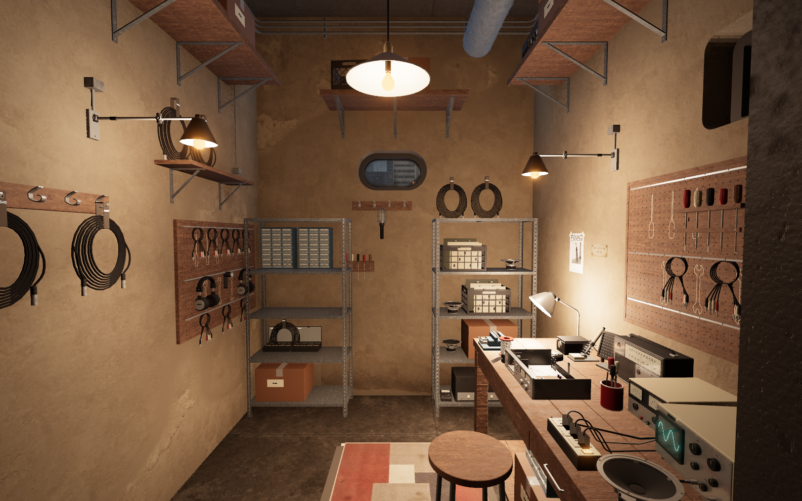
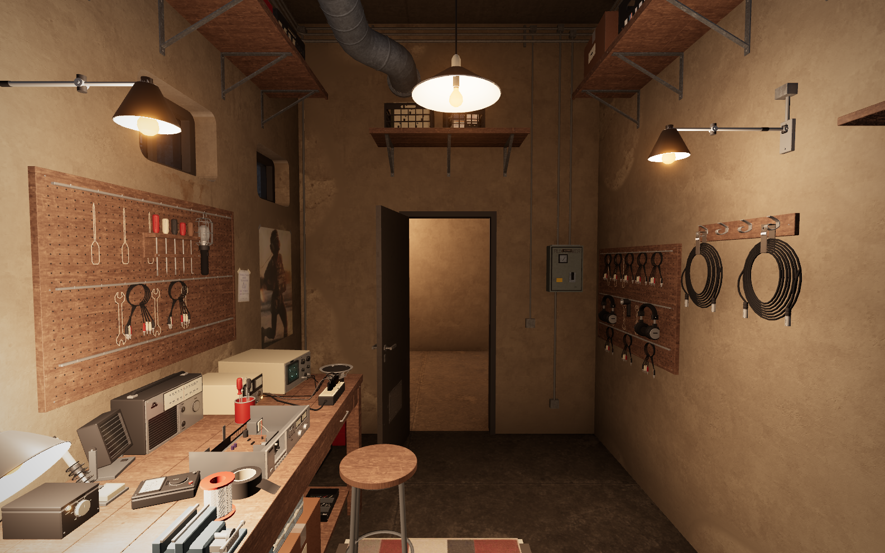
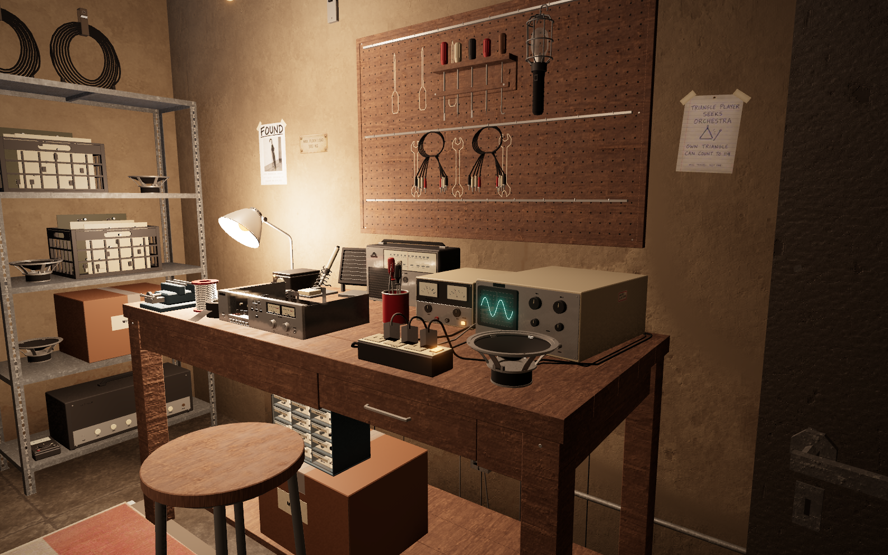
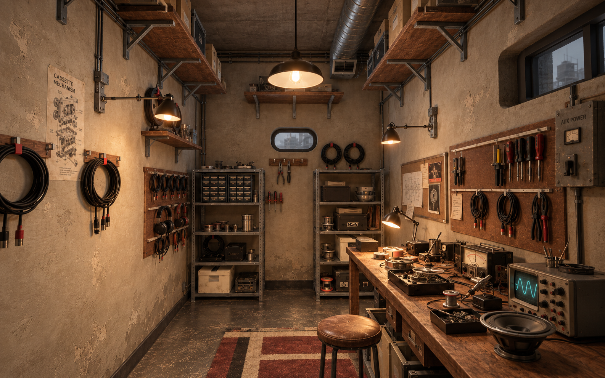
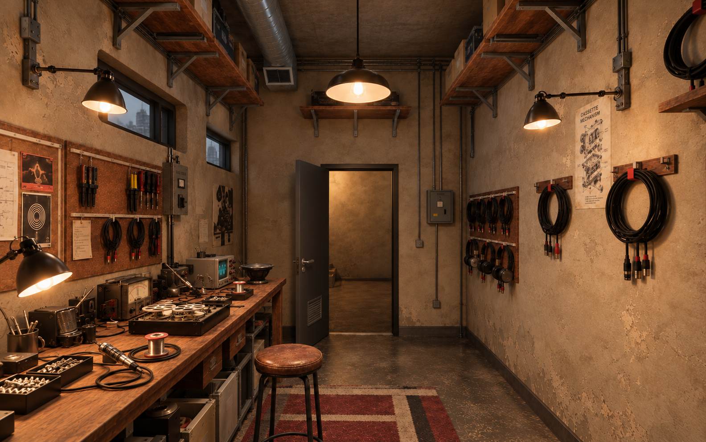

Leg City · 10 October 2026
Workshop · concepts and progress
The second 3D pass is live: fine hardboard pegboards, hanging repair leads, brown cartons, warm worn plaster and a fuller repair bench with an open chassis, solder spool and tool cup. A larger rug and the bench-side extraction duct complete this pass. These are actual pictures of the deployed room at 19:00. The approved concepts below remain the visual target. Tap any picture for full resolution.
Live · entrance toward the workbench

Live · workbench toward the entrance

Live · repair bench detail

Approved concept · entrance toward the workbench

Approved concept · workbench toward the entrance
